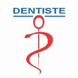

Cabinet dentaire du Docteur SOUISSI Ridha div>

Bienvenu chez Docteur SOUISSI Ridha
Docteur SOUISSI Ridha
45 ans
34 Rue de la Republique
Lyon
Souissi.ridha@gmail.fr
PRESENTATION
Le dentiste est le docteur qui veille sur votre bouche. À l’aide d’examens, ce professionnel de la santé veille à
la prévention,au dépistage, au diagnostic et au traitement des déficiences, des anomalies et des blessures de la
dentition,de la bouche, des maxillaires et des tissus avoisinants. Il peut également prescrire des médicaments.
La majorité des dentistes québécois exercent en cabinet privé; certainstravaillent dans le secteur public,
PARCOURS PROFESSIONEL
Le dentiste est le docteur qui veille sur votre bouche. À l’aide d’examens,
ce professionnel de la santé veille à
la prévention, au dépistage, au diagnostic et au traitement des déficiences,
des anomalies et des blessures de la
dentition, de la bouche, des maxillaires et des tissus avoisinants. Il peut
également prescrire des médicaments.
La majorité des dentistes québécois exercent en cabinet privé; certains
travaillent dans le secteur public, notamment